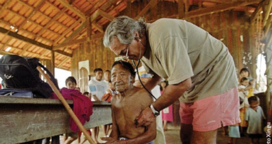

Parque do xingu
O Parque do Xingu é uma unidade de conservação localizada no estado do Mato Grosso, no Brasil. É uma das maiores áreas protegidas de floresta tropical do mundo, abrigando uma grande diversidade de espécies animais e vegetais. É também o lar de várias comunidades indígenas que vivem de acordo com seus modos de vida tradicionais e têm uma forte conexão com a terra e a natureza. O parque foi criado em 1961 e é administrado pelo Instituto Chico Mendes de Conservação da Biodiversidade (ICMBio).
O Parque do Xingu abriga diversas comunidades indígenas, incluindo os povos Yudjá, Ikpeng, Wauja, Kaiabi, Kamaiurá, Trumai, Aweti, Juruna, entre outros. Essas comunidades possuem línguas, costumes e tradições únicas, e são reconhecidas pela sua relação especial com a terra e a natureza. As comunidades indígenas do Parque do Xingu têm desempenhado um papel fundamental na preservação da biodiversidade e na promoção da diversidade cultural na região.
-
 AÇOES HUMANITARIAS DA SAÚDE
As ações humanitárias de saúde no Parque do Xingu buscam garantir o acesso das comunidades indígenas a serviços de saúde de qualidade. Isso é feito através de campanhas de vacinação, atendimento médico e odontológico, programas de prevenção e controle de doenças, ações de saneamento básico e promoção da higiene pessoal, treinamento de profissionais de saúde indígenas, distribuição de medicamentos e equipamentos médicos e ações de conscientização e educação em saúde. Essas ações são essenciais para garantir o bem-estar e a saúde das comunidades indígenas que vivem no Parque do Xingu. -
AÇOES HUMANITARIAS DA JUSTIÇA
As ações humanitárias de justiça no Parque do Xingu buscam garantir os direitos e a proteção das comunidades indígenas. Isso inclui apoio na demarcação e regularização das terras, combate à violência e discriminação, assessoria jurídica, programas de conscientização, apoio à criação de políticas públicas e campanhas de mobilização social. Essas ações são essenciais para garantir a justiça social e a proteção dos direitos das comunidades indígenas que vivem no Parque do Xingu.Reconhecimento dos direitos territoriais: Muitas leis reconhecem e protegem os direitos territoriais dos povos indígenas. -

POLUIÇAO DOS RIOS
A poluição dos rios é um problema no Parque do Xingu, causado principalmente pela atividade humana, como o lançamento de esgoto e resíduos químicos na água. Além disso, a mineração e a agricultura intensiva também contribuem para a contaminação dos rios. A poluição dos rios afeta diretamente a vida das comunidades indígenas que dependem da água para sobreviver e para suas atividades diárias, como a pesca e a agricultura. Além disso, a poluição prejudica a biodiversidade do ecossistema, afetando a fauna e a flora da região. As autoridades têm trabalhado para mitigar os efeitos da poluição, mas a falta de recursos e a falta de conscientização da população ainda são desafios. -
INVASAO DE TERRAS NO PARQUE XINGU
O Parque do Xingu sofre com invasões de terras por fazendeiros e garimpeiros, que desmatam a área e causam prejuízos ao meio ambiente e às comunidades indígenas que habitam o local. Essas invasões ocorrem principalmente em áreas de fronteira do parque, onde a fiscalização é mais difícil e os recursos são limitados. A presença desses invasores ameaça a integridade do ecossistema e a sobrevivência das comunidades indígenas que dependem dos recursos naturais da região. As autoridades competentes têm trabalhado para coibir essas invasões, mas o problema ainda persiste.Das cinco terras indígenas (TIs) que mais queimaram em setembro foram no Pará. -
AS QUEIMADAS NA RESERVA
Infelizmente, as queimadas são um problema recorrente na Reserva do Xingu e em outras áreas de vegetação no Brasil. Durante o período de seca, que geralmente ocorre de maio a setembro, as queimadas podem se tornar mais frequentes e intensas, causando danos ao meio ambiente e à saúde das pessoas.As queimadas cresceram 58% entre 2008 e 2016, conforme levantamento feito a pedido do UOL pelo Ibama (Instituto Brasileiro do Meio Ambiente e dos Recursos Naturais Renováveis). O indicador foi calculado a partir da base de dados do INPE (Instituto Nacional de Pesquisas Espaciais). -
Area do parque XINGU
Com uma área de cerca de 2,6 milhões de hectares, a reserva abrange uma grande diversidade de ecossistemas, como florestas, savanas e cerrados, e abriga uma rica biodiversidade, com muitas espécies endêmicas da região. Além disso, a reserva é o lar de diversas comunidades indígenas, como os Kayapó, Kamaiurá, Yudjá, Ikpeng, entre outros, que preservam suas tradições e culturas ancestrais. A proteção da Reserva do Xingu é fundamental para a conservação da biodiversidade e para garantir a sobrevivência das comunidades indígenas que vivem na área, bem como para a promoção do desenvolvimento sustentável na região.